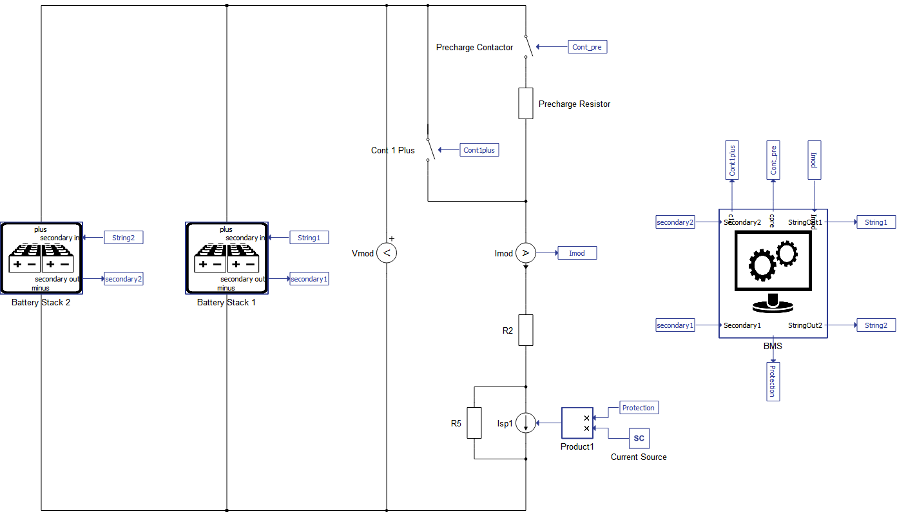
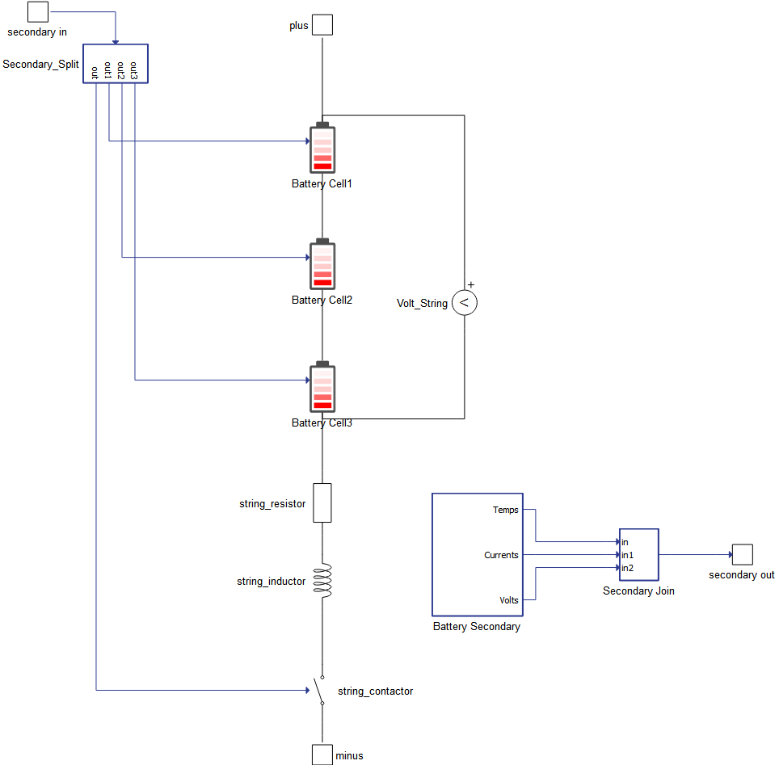
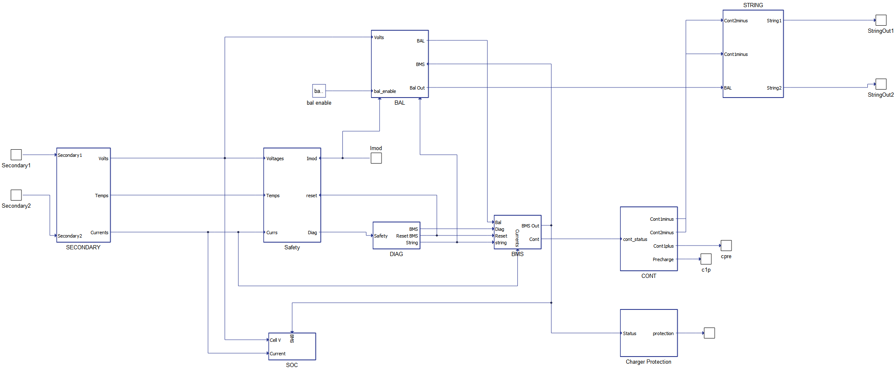
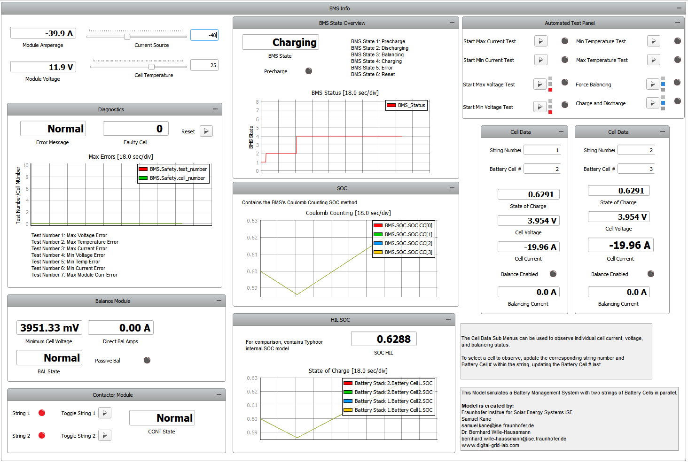

BMS with FoxBMS inspired architecture
Detailed overview of the implementation of a battery management system (BMS) with an overall architecture inspired by the foxBMS® Open-Source Platform.
Introduction
Battery Management Systems (BMS) are important for monitoring the safety and state of charge of battery systems and are used in a wide range of applications, including Electric Vehicles (EVs), energy storage systems (ESS), and consumer electronics. Most battery systems contain a battery module comprised of battery cells arranged in strings, a precharge circuit, and switches to isolate the battery in case of unsafe conditions.
The BMS is a critical unit that is responsible for communicating with the system operators and other systems that the battery interacts with. Because of this, it is important to test the unit throughout different stages of the development cycle, as demonstrated in this example using a software-in-the-loop approach. In this case, the BMS logic is implemented within the model using signal processing components. The model exchanges the necessary information with the supervisory system (SCADA panel), which in turn provides a set of options for interacting with the battery system. From this panel, you can monitor the state of charge (SOC) of the battery, voltage, current, and temperature characteristics of the battery cells. The BMS also monitors the voltage of the individual cells and balances them accordingly.
For reference, this application note will use the following nomenclature to refer to individual items of the module. An individual battery cell is a cell. The total number of cells connected in series with a contactor is a string. All strings form the complete Battery Module. This application note describes in detail the BMS Module and the stacker function for defining a battery module.
Model description
Figure 1 shows an implemented layout of the designed battery system. The system is built based on the Battery Cell component. The base model and reference SCADA panel are set for a system with two strings connected in parallel, with 3 battery cells per string. Nevertheless, it is modular and both the battery stack and BMS parameters can be modified to explore different configurations.

In addition to the Battery Stacks, the BMS communicates with the precharge circuit and the positive contactors in the model. The precharge contactor is in series with a 100 Ω resistor, to reduce the total current to the battery cells when first charging them. To simulate a discharge or a charging current for the Battery System, a Current Source is used. Additional resistors are included in the model for numerical stability.
There are several key safety parameters you can parametrize in the BMS:
- Maximum cell voltage
- Deep discharge voltage
- Maximum current per string
- Maximum module current
- Maximum temperature
- Minimum temperature
Additionally, you can define the desired precharge time. The BMS can handle both balancing methods supported by the Battery Cell component (passive and direct current input), and there is a similar but separate model for only balancing between strings.
Figure 2 shows the layout of a battery stack module comprised by 3 cells. You can modify the key parameters of the battery cells directly in the properties of the battery stack, such as execution rate, SOC Vector, Temperature Vector, Open Circuit Voltage (OCV) Vector, Internal Resistance (IR), and Coulombic Efficiency (CE). These values propagate down to the individual battery cells. The Battery Secondary works as the local control chip on a control network, sending the status of the cells to the BMS and receiving commands from the BMS. The vector “secondary out” is an array with size equal to 3 times the number of battery cells, such that:
Out=[[T1, …, Tn],[i1, …, in],[v1, …,vn]]where n is the number of cells, and Tj, ij, and vj are the temperatures, currents, and voltages of the jth cell, respectively. The vector "secondary in" contains the contactor, the balancing, and the temperature inputs for each battery cell.

The BMS Module is comprised of several independent state machines and C function components, as shown in Figure 3. The overall architecture is inspired by the Open-Source Project FoxBMS®. The modules in the BMS subsystem are as follows:
- SECONDARY - prepares data from the stack for processing by the BMS
- Safety - evaluates cell data against critical safety parameters
- DIAG - notifies BMS when a safety status or user input is triggered
- BAL - the balance module determines which cells need balancing
- CONT - the contactor module manages the contactors for the Battery Pack
- SOC - performs coulomb counting on the cells to monitor SOC
- STRING - prepares the vector data for the battery stack module and automatically updates outputs to match the number of strings needed
- BMS - Maintains the overall state machine for the BMS

Simulation
This application comes with a pre-built SCADA panel (Figure 4). The panel offers most essential user interface elements (widgets) to monitor and interact with the simulation in runtime. You can customize it freely to fit your needs.

By running the simulation with the default settings, you can monitor the BMS throughout normal operation. At the top left you can set the current source setpoint and control the rate of charging or discharging of the battery pack. In this condition, the Diagnostics, Balance, and Cell Data groups report normal information on the cells and status of the individual subsystems. The Automated Test Panel group can be used to trigger error conditions in the BMS, while the Contactor Module group can be used to manually disconnect or reconnect a string.
The default model with two strings and 3 battery cells per string has been tested and proved functional on the HIL402 and VHIL+, but should work with all HIL systems. As mentioned before, the test panel triggers various error conditions in the BMS safety purview. They are as follows:
- The minimum and maximum current and voltage tests modify the state of charge and current settings to trip the safety settings. It is recommended to return the current to a safe current level and direction prior to resetting the error state;
- The Force Balancing test will create a state of charge imbalance between two strings to force cell balancing. This will toggle back and forth until the difference in the state of charge returns to an acceptable range. Given that the BMS relies on the current counting method for the SOC estimation, whenever SCADA changes to the SOC are made, they will have to be monitored in the HIL SOC Panel;
- The charge and discharge cycle will discharge the cells to a SOC of 10%, and then recharge back to 90%;
- The temperature minimum and maximum limits will set the battery cell temperature well in excess of the BMS limitations and trigger a failure condition. This will require the temperature to be reset prior to safe operation;
- Additionally, the strings can be connected or disconnected using the Contactor Module. Balancing is disabled for the disconnected string.
Test automation
We don’t have a test automation for this example yet. Let us know if you wish to contribute and we will gladly have you signed on the application note!
Example requirements
Table 1 provides detailed information about the file locations and hardware requirements for running the model in real-time, followed by the HIL device resource utilization when running the model using this minimal hardware configuration. This information is provided to help you with running and customizing the model as you see fit.
| Files | |
|---|---|
| Typhoon HIL files | examples\models\battery management systems\foxbms inspired architecture foxbms inspired architecture.tse foxbms inspired architecture.cus |
| Minimum hardware requirements | |
| No. of HIL devices | 1 |
| HIL device model | HIL101 |
| Device configuration | 1 |
| HIL device resource utilization | |
| No. of processing cores | 1 |
| Max. matrix memory utilization | 3.96% (core0) |
| Max. time slot utilization | 18.18% (core0) |
| Simulation step, electrical | 1 µs |
| Execution rate, signal processing | Multirate (250 µs, 500 µs) |
Authors
The model and application note have been created by Fraunhofer Institute for Solar Energy Systems ISE within the activities of the Digital Grid Lab www.digital-grid-lab.com. For detailed questions, refer to:
- Dr. Bernhard Wille-Haussmann, Fraunhofer ISE, Head of Grid Operation and Planning, bernhard.wille-haussmann@ise.fraunhofer.de
-
Samuel Kane, Fraunhofer ISE, Scientific Assistant, samuel.kane@ise.fraunhofer.de